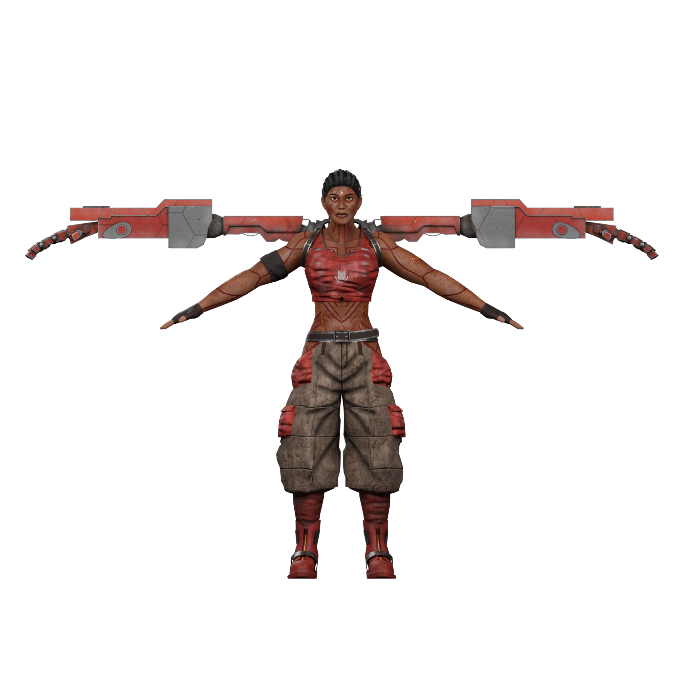
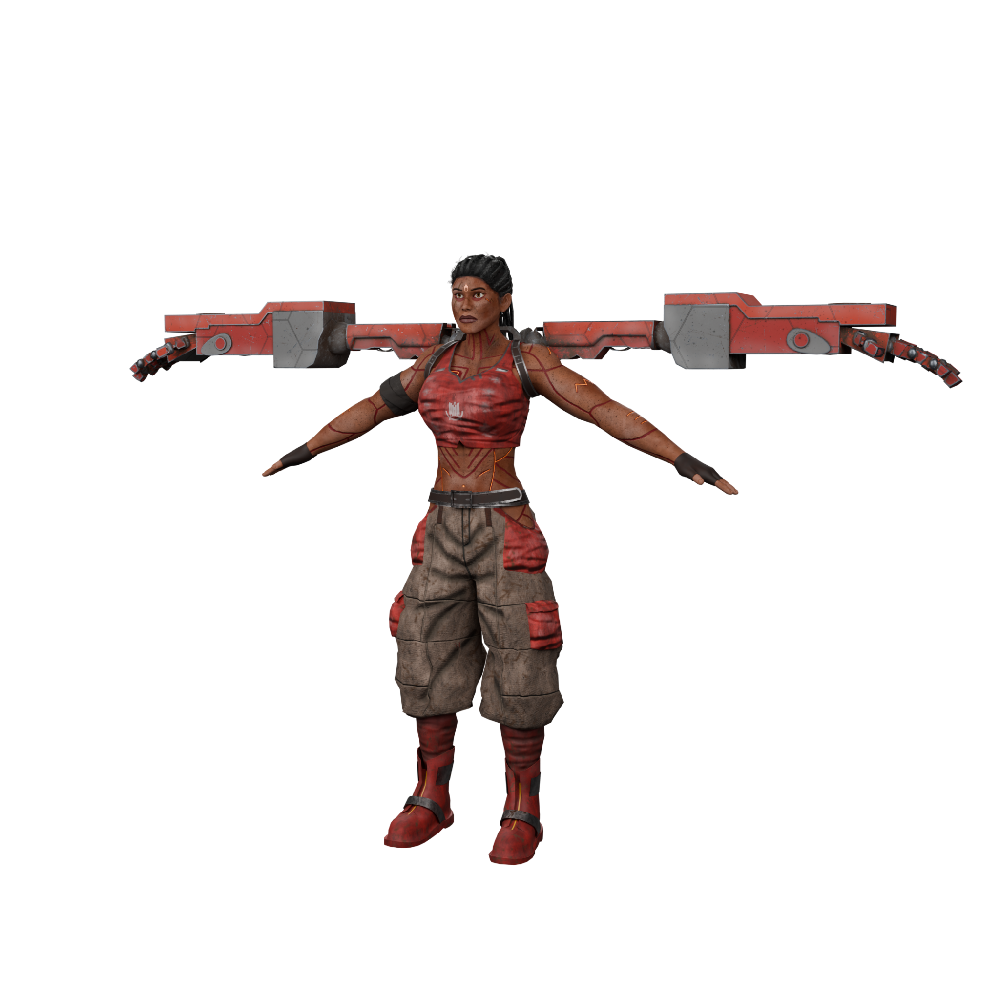
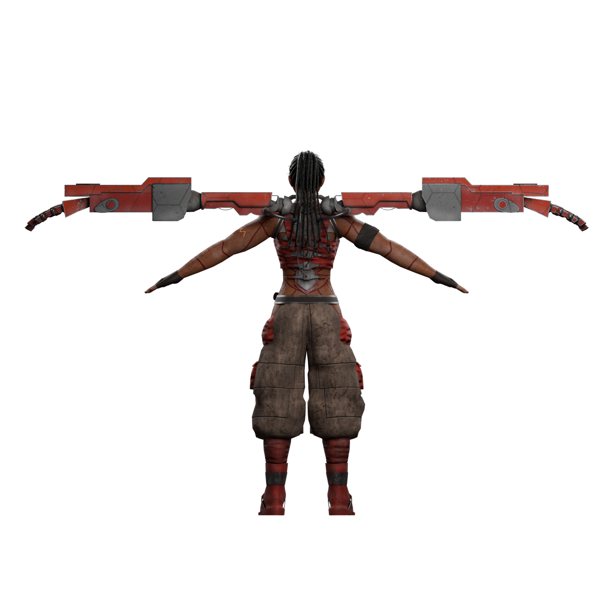
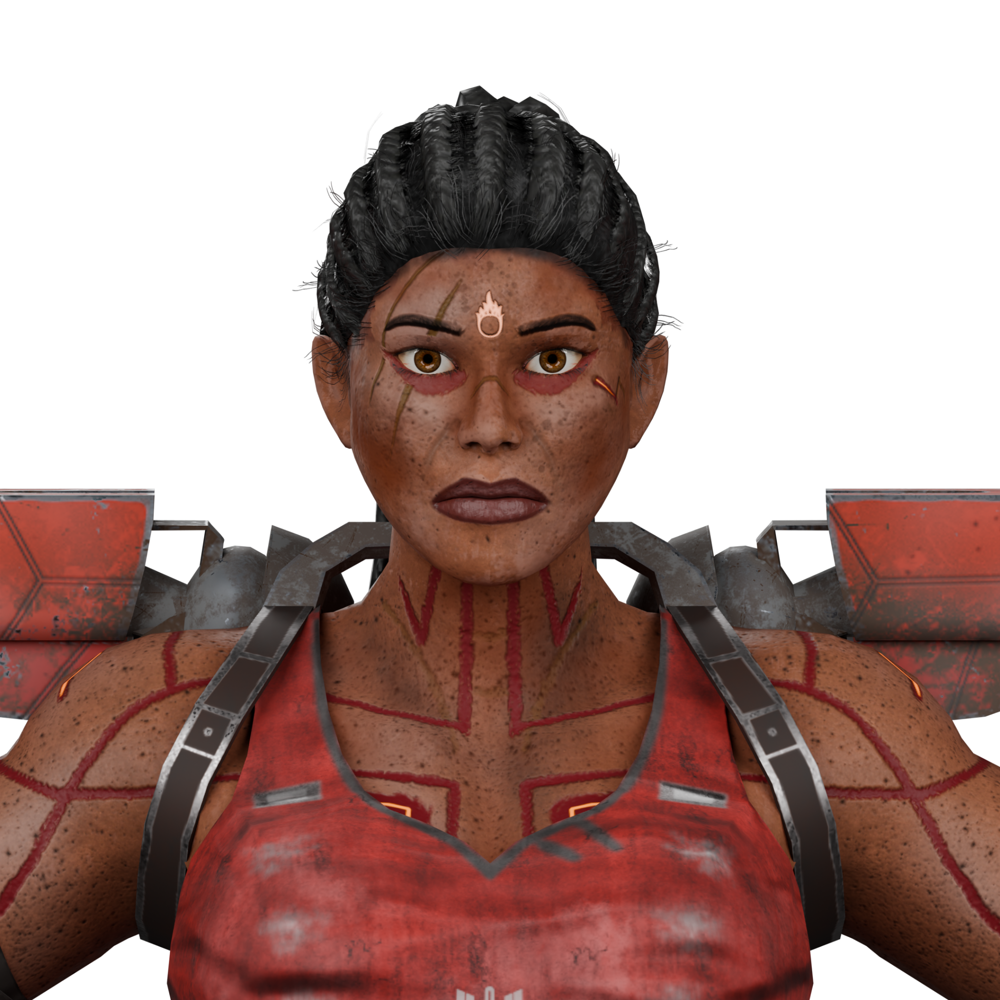
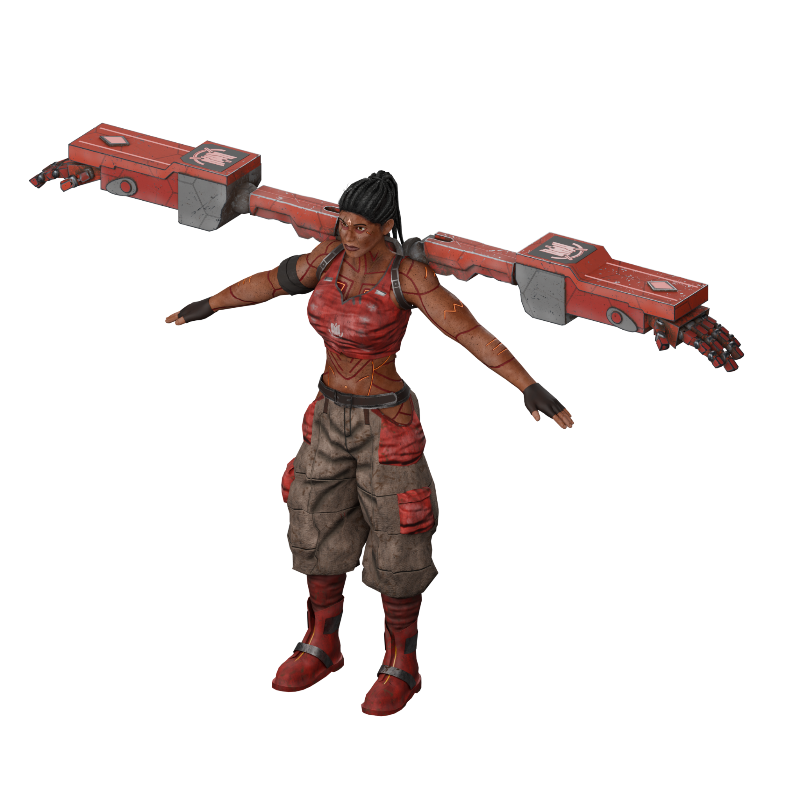
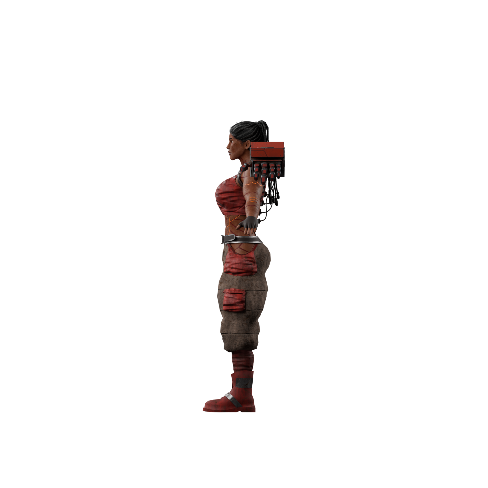
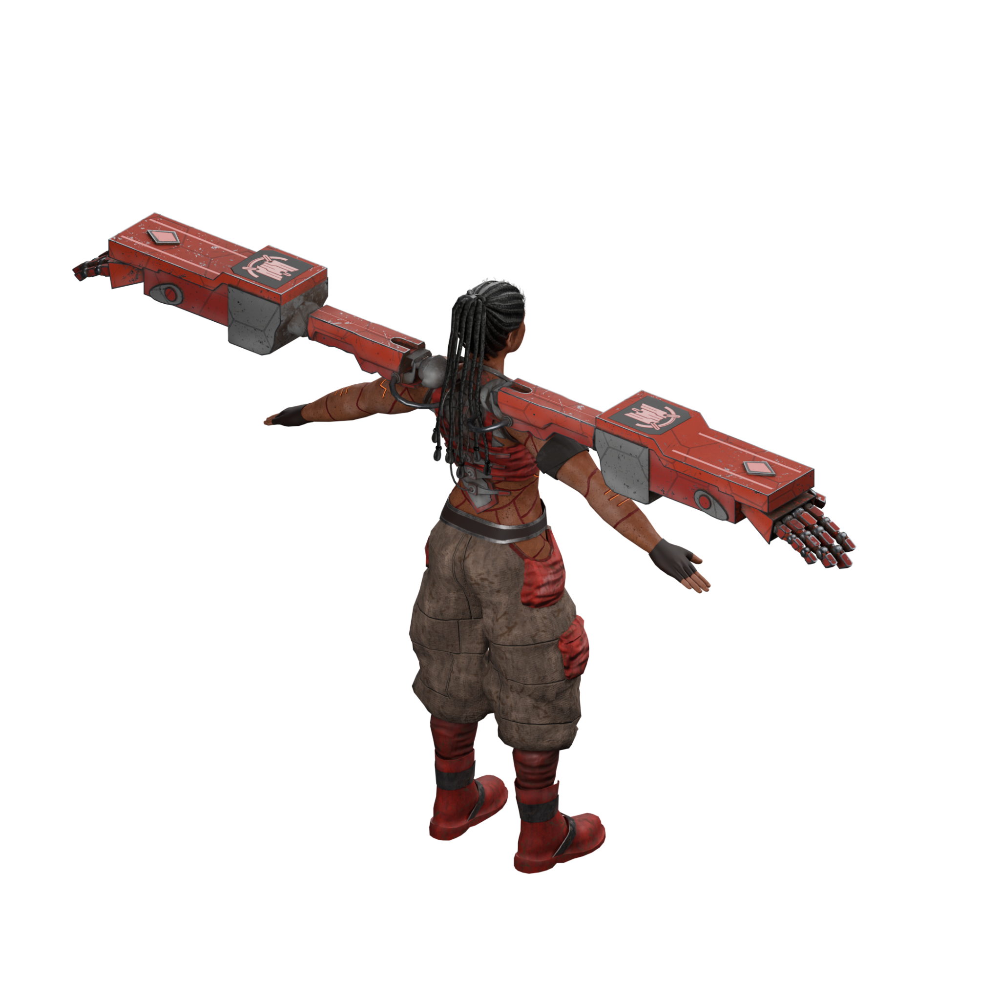
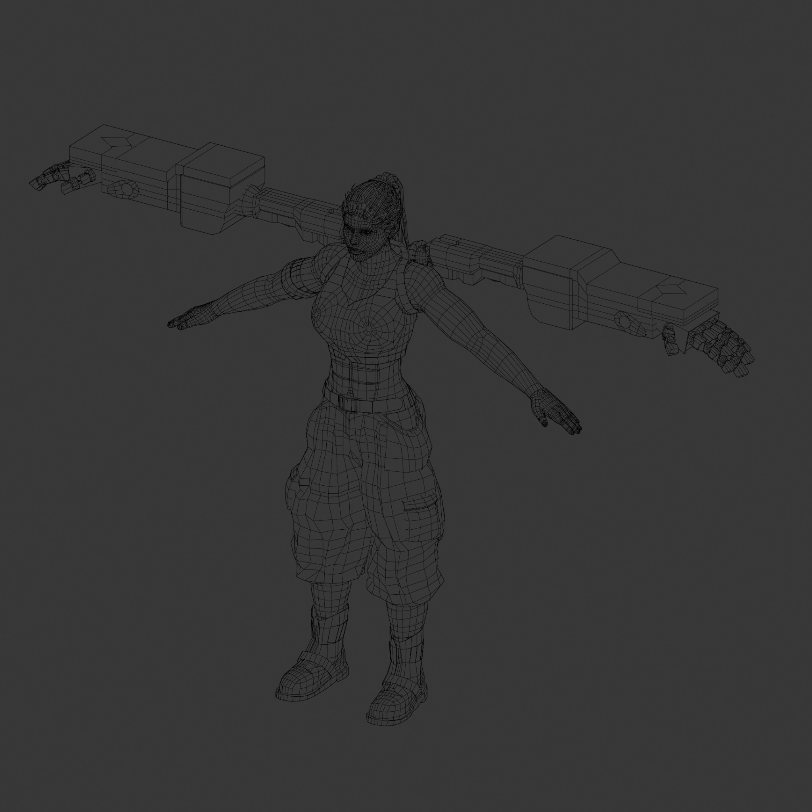

CHARACTER ART · REAL-TIME GAME ASSET
Adhira —
The Apocalypse Seer
A stylized, game-ready character combining post-apocalyptic science fiction with Indian cultural influence. Designed as a narrative “Old Soul” — a hero reborn across timelines.








PROJECT OVERVIEW
Character with a story.
Adhira’s visual language brings together survival-worn materials, seer markings, tribal tattoos and a modular back-mounted weapon system. The surface treatment aims to communicate age, survival and spiritual depth through scars, wear, dust and ritual paint rather than clean, plastic-looking surfaces.
The design uses a limited red-faction-inspired palette and a braided hairstyle referencing an ancient warrior aesthetic.
MY WORKFLOW & TOOLS
Production details.
- 3D modeling, UV unwrapping, material assignment, lighting and rendering in Blender.
- Custom hand-painted stylized PBR texturing in Substance 3D Painter.
- Prepared and exported for real-time use; tested inside Godot Engine.
- 48K triangles and 5 materials.
Software: Blender, Substance 3D Painter, Godot Engine.